Práctica de ampliación: Configuración de un servidor Nginx con Hosts Virtuales y directorios de usuario
La implementación de esta práctica implica la configuración de un servidor web Nginx para el enrutamiento de múltiples rutas asociadas a los usuarios que se generarán.
Conexión al servidor mediante SSH
Para la ejecución de la práctica, se procederá utilizando el protocolo SSH como método de conexión al servidor desde el anfitrión, y se adjunta una captura de pantalla que documenta el proceso de acceso al servidor.
ssh <user>@<host>
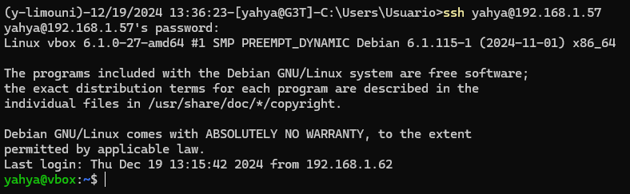
Creación de usuarios y carpetas
En esta sección, llevaremos a cabo la creación de dos usuarios, junto con sus respectivas carpetas asignadas
Creación de usuarios
Creamos los usuarios necesarios para esta práctica. que serián los usuarios mohamed y fettouma, usando los comandos siguientes.
sudo useradd -m -s /bin/shell <username>
useradd: Comando para crear un nuevo usuario-m: Crea automáticamente la carpeta home del usuario.-s: /bin/bash: Asigna bash como shell predeterminada.<username>: Nombre del usuario a crear.
sudo passwd <username>
passwd: Comando para establecer<username>: Nombre del usuario al que se le asignará la contraseña
En mi caso sería:
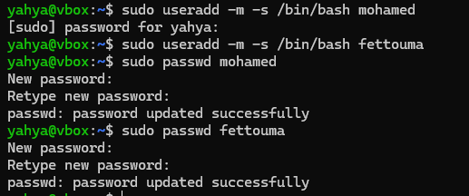
Se han creado los usuarios mohamed y fettouma con sus directorios correspondientes (en home).
Creación de carpetas con los permisos necesarios
Vamos a crear una carpeta para que Nginx pueda mostrar las páginas web de cada usuario. seguimos los siguientes pasos:
- Iniciamos sesion con el usuario usando
su <username> - Nos dirigimos a la carpeta
cd ~ - Creamos la carpeta
public_htmldonde se guardarán los archivos de la web.mkdir public_html -
Cambiar los permisos para que pueda acceder nginx usando el comando
setfaclque permite manejar permisos de archivos y carpetas de una manera más detallada que el comandochmod.-> Estructura del comando:
bash setfacl [options] [mode] [file]options: puede ser -x (exluir) -m (modificar) -b (eliminar) -R (recursividad) -d (se aplican los permisos a cada archivo que se crea posteriormente)mode: para especificar si es un usuario, un grupo o otros especificando los permisos deseados Ejemplo: u:username:rwx.file: el archivo o direcotio al cual se aplicarán los permisos
-
Comprobar que se hayan establecido los permisos de forma correcta usando el comando:
bash getfacl <filename>
En mi caso seria lo siguiente para los dos usuarios:
- Usuario mohamed
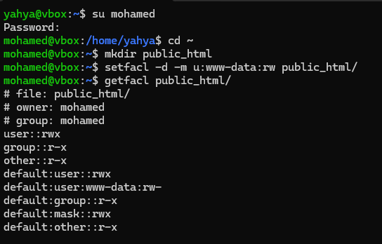
- Usuario fettouma
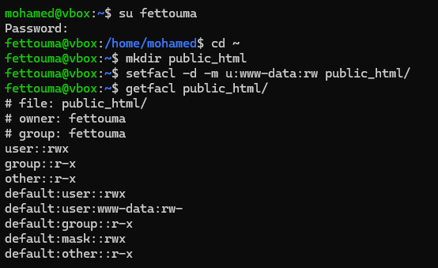
Creación de páginas webs estáticas
Creamos una página estática básica para cada usuario para comprobar el funcionamiento de nuestro servidor.
- usuario mohamed
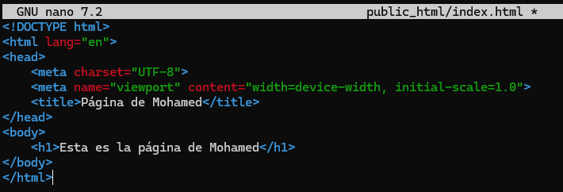
- usuario fettouma
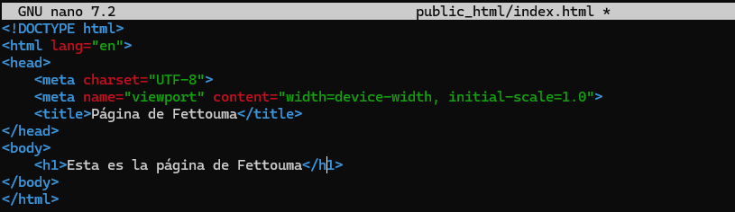
Nginx
En esta sección vamos a instalar y configurar nginx para acceder a nuestros hosts virtuales.
Instalación de Nginx
Instalamos Nginx mediante el gestor de paquetes de debian apt.
Comandos a ejecutar:
sudo apt-get update # Actualiza la lista de paquetes disponibles y sus versiones en los repositorios configurados
sudo apt-get upgrade # Instala las actualizaciones de los paquetes ya instalados en el sistema, sin eliminar ni instalar nuevos paquetes
sudo apt-get install nginx -y # Instala el servidor web Nginx en el sistema. La opción -y (opcional) acepta automáticamente todas las preguntas durante la instalación
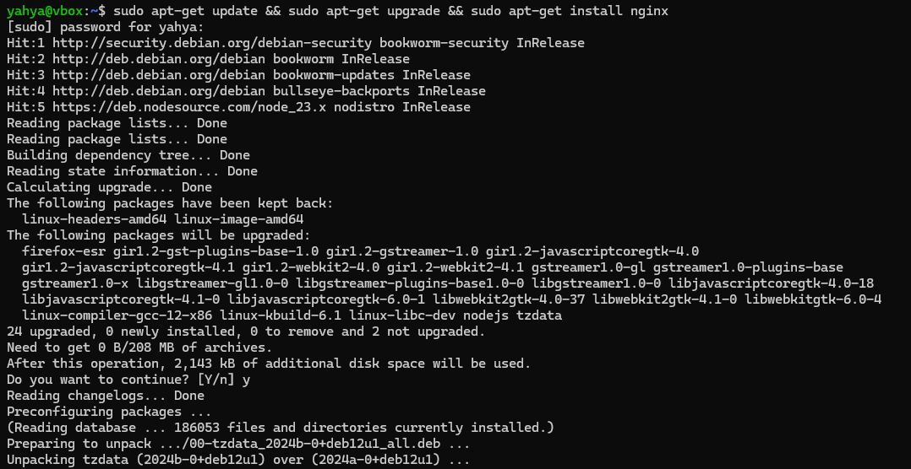
Ejecutamos el comando siguiente para comprobar que todo funciona correctamente
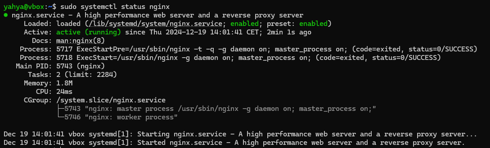
O también aceediendo a la página por defecto de Nginx desde el navegador http://127.0.0.1/
Generación de los certificados SSL
Antes de proceder a la configuración de los hosts virtuales, generamos las claves ssl para una conexión segura mediante https aplicando el comando:
sudo openssl -req -x509 -newkey rsa:4096 -days 365 -sha256 -nodes -out <archivo_cert> -keyout <archivo_key>
-req: Indica que se está procesando una solicitud de certificado.-x509: Genera un certificado autofirmado en lugar de una solicitud de certificado.-newkey rsa:4096: Crea una nueva clave privada RSA de 4096 bits.-days 365: Establece la validez del certificado por 365 días14.-sha256: Utiliza el algoritmo de hash SHA-256 para firmar el certificado.-nodes: No cifra la clave privada.-out <archivo_cert>: Especifica el nombre del archivo de salida para el certificado.-keyout <archivo_key>: Especifica el nombre del archivo de salida para la clave privada.
Generamos uno para cada usuario:
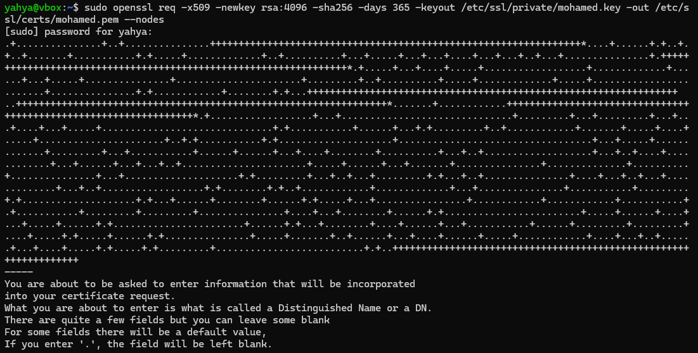
Configuración de los Hosts Virtuales:
Para configurar nuesto host virtual para que redirija las peticiones http a https metemos el siguiente bloque server:
server {
listen 80;
listen [::]:80;
server_name ejemplo.com;
# Redirigir las peticiones http a https con el mismo host y URI
return 301 https://$host$request_uri;
}
Bloque server para la configuración de HTTPS con las claves ssl generadas anteriormente:
server {
listen 443 ssl;
listen [::]:443 ssl;
# Nombre del servidor
server_name ejemplo.com;
# Ruta a la raiz del servidor
root /ruta/a/public_html;
index index.html index.htm index.debian-html;
# Claves SSL generadas
ssl_certificate /ruta/al/certificado.pem;
ssl_certificate_key /ruta/a/clave_privada.key;
location / {
# Si no se encuentra la ruta se devuelve un error 404
try_files $uri $uri/ =404;
}
}
En mi caso es: (para la pagina del usuario mohamed)
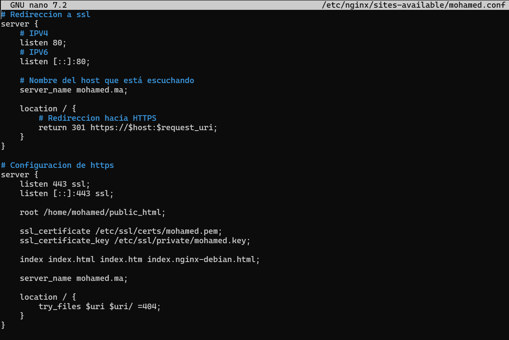
Activar los hosts virtuales
Para activar nuestros hosts, hay que crear enlaces simbolicos de los archivos de configuracion creados al directorio /etc/nginx/sites-enabled
sudo ln -s /etc/nginx/sites-available/<conf_file> /etc/nginx/sites-enabled
En mi caso es:
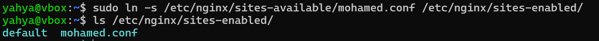
Comprobamos la sintaxis de los archivos de configuracion, si todo OK, reiniciamos el servicio de Nginx:
Comando para comprobar la sintaxis:
sudo nginx -t
Comando para reiniciar el servicio de Nginx:
sudo systemctl restart nginx
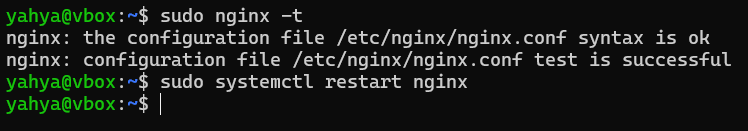
Agregar los nombres de los hosts:
Para poder acceder a nuestros hosts desde la máquina anfitriona, hay que añadirlos al archivo hosts, situado en C:\Windows\System32\drivers\etc\hosts para Windows y /etc/hosts para Linux.
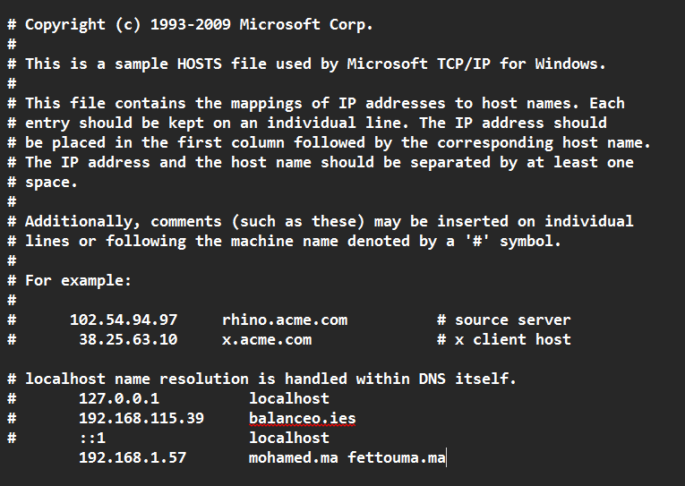
Prueba de funcionamiento de los hosts
Y ahora ya podemos proceder a la comprobación del funcionamiento de nuestros hosts virtuales.
- Para el usuario
mohamed
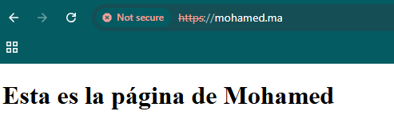
- Detalles del certificado autofirmado:
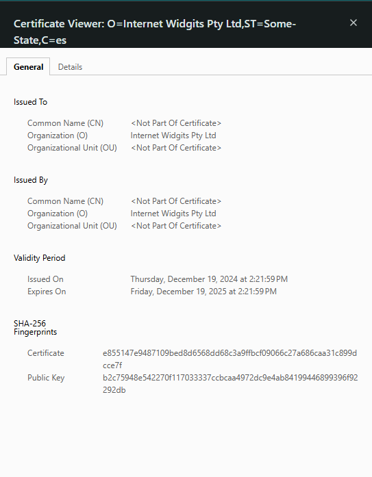
- Para el usuario
fettouma
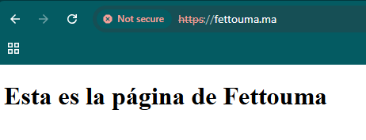